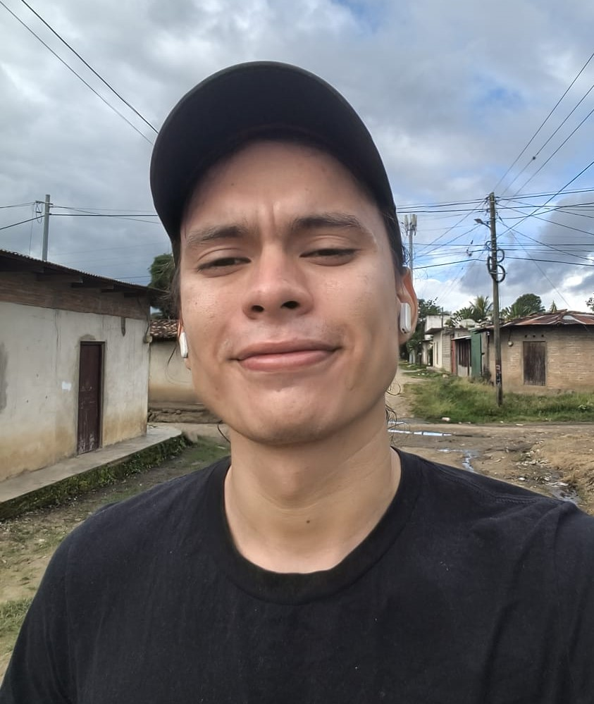

DATOS PERSONALES
Nombre completo:
Kevin Ernesto Cardoza Lopez
Cédula:
489-300301-1003Y
Teléfono:
8937-7967
Correo electrónico:
pevin.kevin@gmail.com
Dirección:
Del Pali 6 cuadras y media al este.
REFERENCIAS PERSONALES
Danny Josue Tercero Tellez
Tel: 8518-6671
Norvin Antonio Gutierres Gutierres
Tel:
5867-8964
FORTALEZAS Y CUALIDADES
- Responsabilidad
- Trabajo en equipo
- Adaptación rápida
- Comunicación efectiva
- Manejo del estrés
DEBILIDADES
- Perfeccionismo (buscando siempre mejorar)
- Reservado al inicio (se adapta rápido)
Currículum Vitae
Soy una persona responsable, comprometida y con disposición para
aprender. Me caracteriza el buen trato al cliente, la colaboración con
mis compañeros y la capacidad para adaptarme a distintos entornos
laborales. Busco siempre cumplir mis tareas con respeto, esfuerzo y
actitud positiva.
Perfil Profesional
Ingeniería en Sistemas de Información
Información sobre la carrera de Ingeniería en Sistemas de Información en
la Universidad Nacional de Ingeniería.
Formación Académica
Universidad Nacional De Ingeniería
Ingeniero En sistemas De información — 2019 a 2024
Emanuel Mongalo y Rubio
Educación Secundaria — 2013 a 2018
Experiencia Laboral
Freelance – Desarrollo Web y Asistencia Académica
2024 – 2025
- Desarrollo de sitios web frontend
- Apoyo en la elaboración de trabajos monográficos
- Asistencia y acompañamiento académico
- Implementación de interfaces web responsivas
- Asistencia en la instalación, operación y gestión de sistemas de información
Taller Cardoza
Asistente de mecánico general
febrero 2016 – septiembre 2018
Licencias y certificaciones
Introducción to Front-End Development
Meta — feb 2026
Perfect Tenses and Modals
University of California, Irvine — feb 2026
Formación Complementaria
- Manejo avanzado del paquete Office (Excel, Word, Project)
- Dominio de los sistemas operativos Windows, Linux Ubuntu
- Administración de base de datos, MySQL, PostgreSQL, SQL SERVER
- Administración de contenido y campañas publicitarias en redes sociales
- Manejo de software de programación C#, JavaScript, PHP